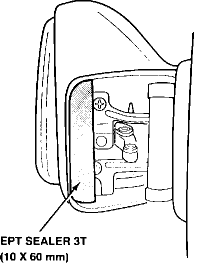

Door Mirror - Vibrates and Rattles
91acura02
April 15, 1991
BULLETIN NO.
91-022
YEAR MODEL VIN APPLICATUON
'90-91 INTEGRA See Vehicles
RS 3-door Affected
Door Mirror Vibration/Rattle
PROBLEM
The door mirror vibrates and rattles as the door is shut.
VEHICLES AFFECTED
'90 Integra RS 3-door: ALL
'91 Integra RS 3-door: thru VIN DA9...MS039577

CORRECTIVE ACTION
Apply EPT sealer to the mirror hinge bracket to prevent it from rattling against the mirror base.
1. Cut a 10 x 60 mm piece of EPT sealer 3T.
2. Swing the mirror forward and apply the EPT sealer to the hinge bracket, as shown.
3. Swing the mirror back to its original position, then readjust the glass.
PARTS INFORMATION
EPT Sealer 3T P/N 06990-SA5-000
WARRANTY CLAIM INFORMATION
In warranty: The normal warranty applies.
Out-of-warranty: Any repair performed after warranty expiration may be eligible for goodwill consideration by the District Service Manager. You must request consideration, and get the DSM's decision, before starting work.
Operation number: 820010 (left)
821010 (right)
Flat rate time: 0.2 hour per mirror
Failed P/N: 76250-SK7-A01
Defect code: 043
Contention code: B07